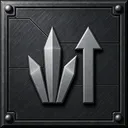
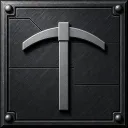
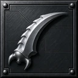
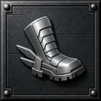

①지금 — 라벨 위 · 값 아래 · 3×2
기준선. 여섯 칸이 모두 같은 무게라 훑기는 편한데 무엇부터 볼지가 없다. 판이 넓어 아래가 비어 보인다.
MY BASE
총 배수×12.4
터치당1.2K
채취당96
일꾼24/40
터치 강화Lv.18
일꾼 강화Lv.11
⛏채굴
값 여섯은 모두 같다(총 배수 ×12.4 · 터치당 1.2K · 채취당 96 · 일꾼 24/40 · 강화 Lv.18 / Lv.11) — 다른 것은 배치와 위계뿐이다. ⛏ 채굴 칸은 공용 슬롯이라 여덟 안이 같은 것을 쓴다. 값 칸에는 한글을 넣지 않는다(단위는 작은 회색 보조 글자). 라운드 0/3/6/9 · 간격 4/8/12 · 숫자는 Rajdhani · 면은 검정이고 색을 갖는 것은 선과 빛뿐이라는 규칙을 여덟 안 모두 지킨다.
①지금 — 라벨 위 · 값 아래 · 3×2
기준선. 여섯 칸이 모두 같은 무게라 훑기는 편한데 무엇부터 볼지가 없다. 판이 넓어 아래가 비어 보인다.
MY BASE
②히어로 — 총 배수 하나를 크게
모바일 방치형에서 가장 흔한 꼴. 대표 숫자가 서고 나머지는 곁들이가 된다.
비어 보이던 높이도 이 숫자가 채운다. 다만 나머지 다섯이 작아져 훑기는 ①보다 불리하다.
MY BASE
③두 구역 — 「버는 것」과 「쌓은 것」
가로 선 하나로 성격이 다른 둘을 가른다. 위=지금 버는 속도, 아래=내가 쌓아 둔 것. 선은 면을 더하지 않는 가장 싼 구분이다(설정 목록과 같은 어휘).
MY BASE
④아이콘 칸 — 그림으로 먼저 찾는다
라벨을 읽기 전에 그림으로 자리를 기억하게 한다. 게임에서 가장 흔한 방식이고
여기 그림은 실제 에셋이다(자리만 잡은 것이 아니다). 가로를 먹어 값 자리가 좁아진다.
MY BASE

총 배수×12.4
채취당96
터치 강화Lv.18
일꾼 강화Lv.11⑤줄 목록 — 라벨 ‥‥ 값
두 열 × 세 줄. 이름과 값이 한 줄에 있어 세로가 덜 든다.
설정·룬 가방과 같은 어휘라 화면 사이가 이어진다. 숫자가 오른쪽 끝에 붙어 열별로 어긋나 보일 수 있다.
MY BASE
⑥칸 나눔 — 지표마다 제 칸
커맨드 카드 슬롯과 같은 물성(옅은 면 + 1px). 여섯이 또렷하게 갈린다.
다만 판 안에 판이라 테두리가 두 겹이 되고, 판때기처럼 무거워질 위험이 있다.
MY BASE
⑦밑변 광원 — 면 대신 빛으로 가른다
칸마다 아래에 1px 광원 한 줄. 상단 구역 띠·탭과 같은 어휘라 화면이 한 세계로 읽힌다. 면을 하나도 더하지 않으면서 여섯이 갈린다. 총 배수 줄만 금색이라 대표가 선다.
MY BASE
⑧머리 띠 + 4칸
총 배수를 판의 머리줄로 빼고 밑변 광원으로 본문과 가른다(구역 상단 띠와 같은 어법).
남은 다섯은 3열 두 줄로 편다. 대표를 뺀 만큼 아래가 ①보다 더 비어 보일 수 있다.
MY BASE